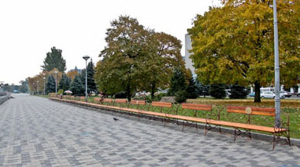
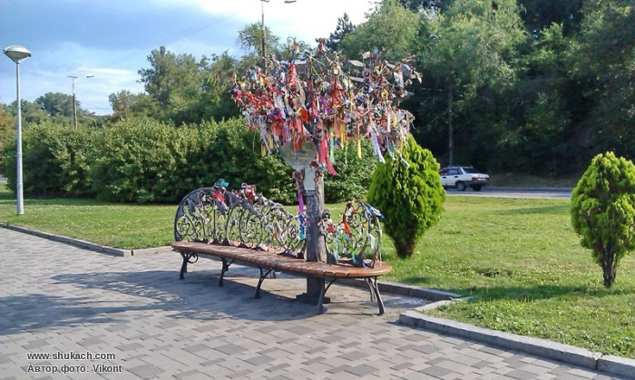
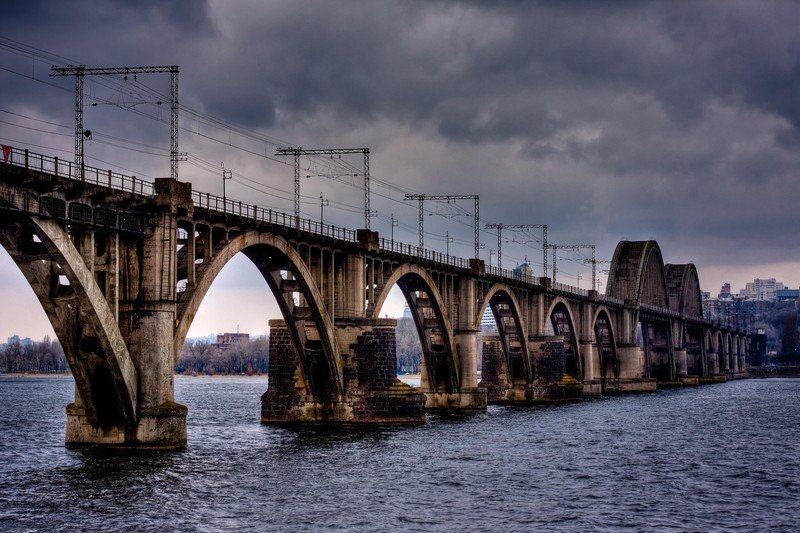

Історія набережної
Набережная Днепра является визитной карточкой города. Это любимое место для прогулок местных жителей и гостей Днипра. Эта широкая набережная, растянувшаяся на тридцать километров вдоль реки, с зеленым бульваром посередине, является одной из самых выдающихся достопримечательностей города. Ее строительство началось в пятидесятых годах прошлого века, до этого прибрежная часть Днепра не была обустроена.
 В 2005–2007 годах набережная Днепра в городе Днипро была полностью реконструирована. Вместо старого асфальтового покрытия положили новую тротуарную плитку, отремонтировали проезжую часть и установили новое современное освещение. Прогуливаясь по набережной, вы обязательно обратите внимание на огромное количество цветов и зеленых насаждений. На территории в две с половиной тысячи квадратных метров посажено более семи тысяч кустов хризантем восьми сортов, сорок видов деревьев, среди которых достаточно редкие для этого региона шаровидные и пирамидальные туи, сосны и можжевельник.
В 2005–2007 годах набережная Днепра в городе Днипро была полностью реконструирована. Вместо старого асфальтового покрытия положили новую тротуарную плитку, отремонтировали проезжую часть и установили новое современное освещение. Прогуливаясь по набережной, вы обязательно обратите внимание на огромное количество цветов и зеленых насаждений. На территории в две с половиной тысячи квадратных метров посажено более семи тысяч кустов хризантем восьми сортов, сорок видов деревьев, среди которых достаточно редкие для этого региона шаровидные и пирамидальные туи, сосны и можжевельник.
Пам'ятки
На набережной Днепра каждый сможет найти для себя любимый уголок. В ее центральной части две террасы – верхняя и нижняя пешеходные зоны.
Одним из главных объектов на обновленной набережной стал светомузыкальный фонтан «Белый Лебедь», установленный на поверхности реки напротив гостиницы «Днепропетровск». Благодаря современной технологии лазерного распыления создаются не только абстрактные композиции, но и конкретные фигуры. Фонтан вращается и «машет крыльями», а высота струи воды достигает 50 метров.
Также на набережной можно увидеть Семейную скамью, Скамейка влюбленных и Дерево счастья, изготовленные местными кузнецами и подаренные жителям ко Дню города.
 
Вы также увидите Днепропетровский цирк, расположенный на улице Сичеславская Набережная, 33. Он был построен по проекту Павла Ниринберга и является одной из визитных карточек города. Здание, выполненное из блестящего металла, оснащенное эффектной подсветкой, будто переносит вас в сказку.
Правый и левый берега реки соединены пятью мостами, самый красивый из них – железнодорожный Мерефо-Херсонский. У Центрального моста находится установленная в 2005 году скульптура «Юность Днепра».

С разных точек набережной прекрасно просматривается построенный на Монастырском острове храм Святого Николая. Нежно-белая церковь с золотыми куполами сразу же стала одним из признанных символов Днипра.
На набережной расположены знаменитые новостройки – две 28-этажные башни-близнецы.
Локація